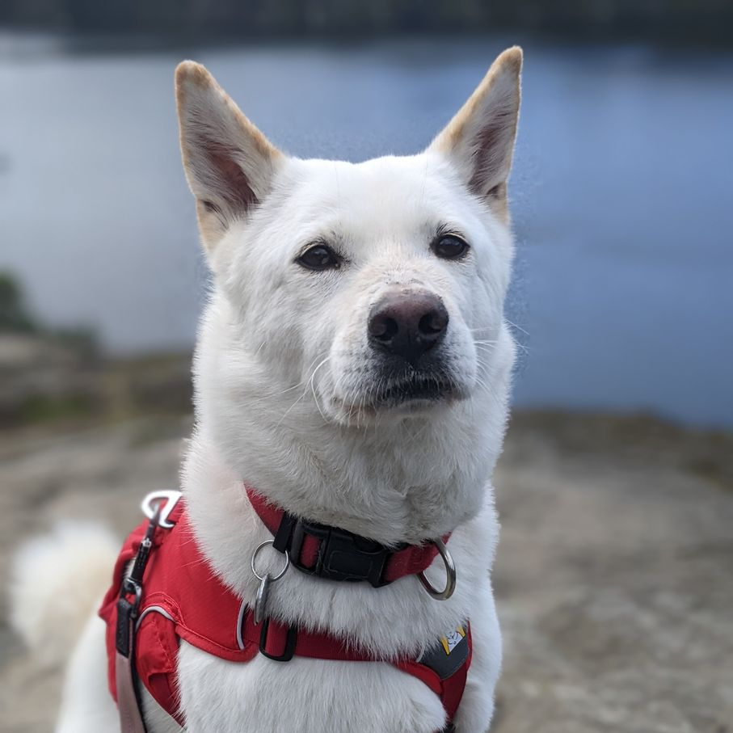

Hello...
I'm Shannon.
A software developer currently located in southern Vancouver Island, on the Coast Salish Territory of the Lekwungen and W̱SÁNEĆ nations.
I'm an outdoor enthusiast, coffee & donut addict, and I like to volunteer with animals.
My dog Boo fulfills her community service obligations by spending time with me. You can follow her on instagram @boo.the.jindo for her unethusiastic take on almost everything we do:
I recently started an online journal ("blog"?) that's so far just stories about me getting sick while travelling. If that tickles your fancy, you can read it here .
Here are some of my fave nonprofits:
- ElderDog - Canada
- Senior Animals in Need Today (SAINTs) - Mission, BC
- Greyhaven Exotic Bird Sanctuary - South Coast, BC
- Wildlife Rescue Association - Burnaby, BC
- North Shore Search and Rescue - South Coast, BC
- Canadian Parks and Wilderness Society - Canada
- Canadian Cancer Society - Canada
- BC Cancer Society - BC
- Alzheimer's Society of BC - BC
- Hogan's Alley Society - Vancouver
- Native Women's Association of Canada - Canada
- Indian Residential School Survivors Society - Canada
- Reconciliation Canada - Canada
- BC Civil Liberties Association - BC
- Downtown Eastside Women's Center - Vancouver, BC
- Friends of the VSO - Vancouver, BC
- Friends of the Vancouver Public Library - Vancouver, BC